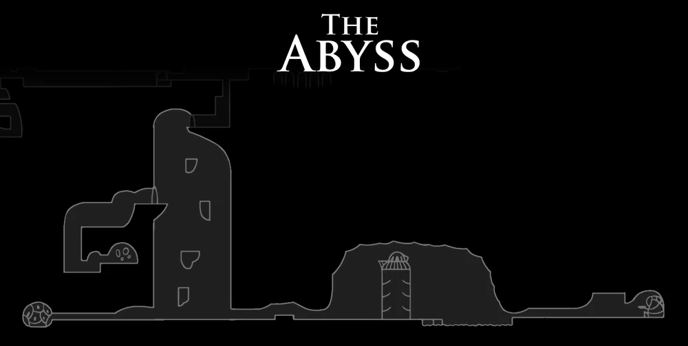

O Vazio Primordial
O local mais escuro e profundo de Hallownest onde os Receptáculos foram criados pelo Reizinho Pálido.

O local mais escuro e profundo de Hallownest onde os Receptáculos foram criados pelo Reizinho Pálido.

As formas vazias e falhas que jazem no fundo do abismo, esticando mãos para puxar o Cavaleiro.